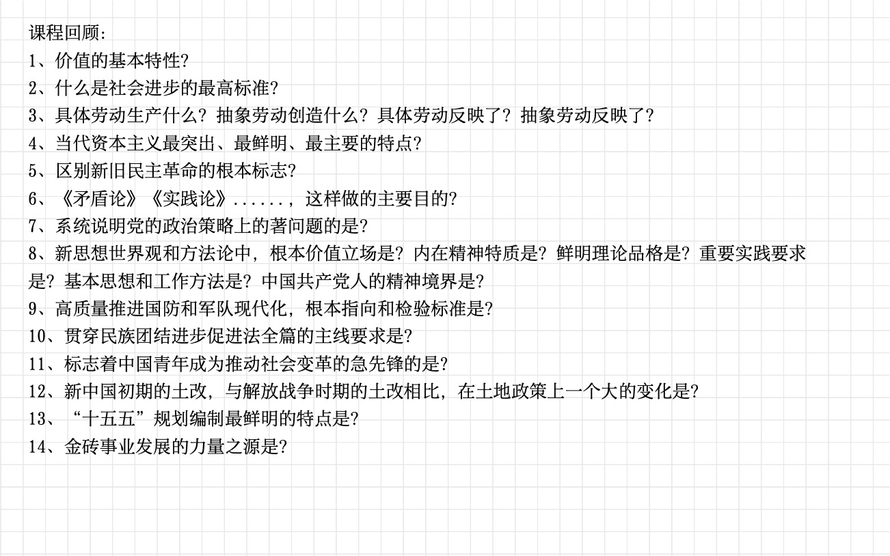

1、价值的基本特性？
价值具有主体性、客观性、多维性、社会历史性。
2、什么是社会进步的最高标准？
生产力的发展即生产力标准。是否有利于生产力的发展，是衡量社会进步的最高标准。
3、具体劳动生产什么？抽象劳动创造什么？具体劳动反映了？抽象劳动反映了？
具体劳动生产使用价值（物质财富）；抽象劳动创造价值；具体劳动反映人与自然的关系，是劳动的自然属性；抽象劳动反映商品生产者之间的社会关系，是劳动的社会属性。
4、当代资本主义最突出、最鲜明、最主要的特点？
金融垄断资本（国际金融垄断资本）的统治和全球扩张，表现为经济金融化、虚拟经济膨胀、金融寡头控制经济和政治。
5、区别新旧民主革命的根本标志？
根本标志是革命的领导权，即无产阶级及其政党是否掌握领导权。
6、《矛盾论》《实践论》•••，这样做的主要目的？
主要目的是从思想根源上清算党内的教条主义（主观主义，特别是王明“左”倾教条主义），确立实事求是的思想路线。
7、系统说明党的政治策略上的著问题的是？
《论政策》（1940年12月），它系统说明了党在抗日民族统一战线中的政治策略原则，即利用矛盾、争取多数、反对少数、各个击破。
8、新思想世界观和方法论中，根本价值立场是？内在精神特质是？鲜明理论品格是？重要实践要求是？基本思想和工作方法是？中国共产党人的精神境界是？
根本价值立场是坚持人民至上；内在精神特质是坚持自信自立；鲜明理论品格是坚持守正创新；重要实践要求是坚持问题导向；基本思想和工作方法是坚持系统观念；中国共产党人的精神境界是坚持胸怀天下。
9、高质量推进国防和军队现代化，根本指向和检验标准是？
根本指向和检验标准是战斗力标准，即能打仗、打胜仗，把战斗力作为唯一的根本的标准。
10、贯穿民族团结进步促进法全篇的主线要求是？
铸牢中华民族共同体意识。这是新时代党的民族工作的主线，也是贯穿民族团结进步促进法全篇的主线要求。
11、标志着中国青年成为推动社会变革的急先锋的是？
五四运动（1919年）。青年学生站在斗争前列，中国青年成为推动社会变革的急先锋。
12、新中国初期的土改，与解放战争时期的士改相比，在土地政策上一个大的变化是？
由解放战争时期征收富农多余的土地财产，改为保存富农经济，即保护中农、中立富农。
13、“十五五”规划编制最鲜明的特点是？
最鲜明的特点是坚持问计于民、开门问策，把加强顶层设计和坚持问计于民统一起来，广泛征求社会各界意见、凝聚共识。
14、金砖事业发展的力量之源是？
力量之源是金砖国家团结合作、联合自强，即“全球南方”国家求和平、谋发展、促合作的共同愿望，其精神动力是开放包容、合作共赢的金砖精神。
课程回顾原图
